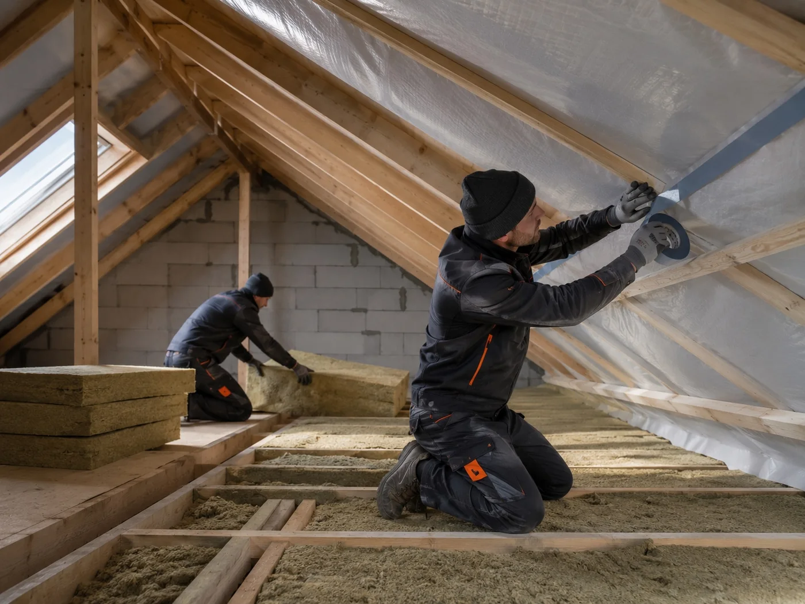

Для яких об’єктів
Теплі скатні покрівлі та мансардні поверхи.
Утеплення покрівельних систем у Харкові з правильним порядком шарів: пароізоляція, мінвата, вентзазор і мембрана.

Утеплення покрівельних систем у Харкові з правильним порядком шарів: пароізоляція, мінвата, вентзазор і мембрана.
Огляд покрівлі та основи
Технічне рішення під об’єкт
Підготовка основи та монтаж
Перевірка вузлів і результату
Утеплення покрівлі допомагає зменшити тепловтрати і зробити будинок стабільнішим за температурою в різні сезони. Але результат залежить не тільки від товщини утеплювача, а від правильної пароізоляції, вентиляції та герметичності вузлів.
Перед роботами перевіряємо конструкцію даху, стан крокв, наявність вентиляційного зазору, примикання, місця навколо труб і мансардних вікон. Від цього залежить схема утеплення та порядок підготовки основи.
Під час монтажу важливо не залишати містки холоду, щілини між плитами, розриви пароізоляції та неплотні примикання. Ми збираємо систему так, щоб утеплювач, мембрани і вентиляція працювали разом.
Працюємо з об’єктами у Харкові та області. Після огляду визначаємо технічне рішення, склад робіт і послідовність монтажу.
Виїжджаємо на об’єкти у Харкові та Харківській області: Салтівка, Олексіївка, Павлове Поле, Нові Будинки, ХТЗ, Журавлівка, Пісочин, Солоницівка, Дергачі, Мала Данилівка, Люботин та інші напрямки.
У портфоліо показані окремі об’єкти без об’єднання різних будинків в одну картку. Для кожної роботи вказані тип об’єкта, покрівельна система та виконані вузли.
Утеплення потрібне, якщо використовується мансарда, є втрати тепла через дах, холодні зони, конденсат на конструкціях або планується реконструкція покрівельного пирога.
Перевіряємо стан крокв, вентиляційні зазори, пароізоляцію, дифузійну мембрану, місця примикань і можливість правильно зібрати покрівельний пиріг.
Іноді можна, але це залежить від конструкції та стану існуючої покрівлі. Якщо є помилки у вентиляції або основі, їх краще виправити до утеплення.
Найчастіше застосовують мінераловатні утеплювачі та супутні матеріали: пароізоляцію, дифузійну мембрану, ущільнювальні стрічки й елементи вентиляції.
Пароізоляція захищає утеплювач від вологи зсередини приміщення. Без неї утеплювач може втрачати властивості, а конструкція працюватиме гірше.
Рішення підбираємо під геометрію, конструкцію та умови експлуатації конкретного об’єкта, а не лише під назву матеріалу.
Теплі скатні покрівлі та мансардні поверхи.
Пароізоляція, утеплювач без щілин, вітрозахист, вентиляційний зазор і герметизація проходок.
Геометрію, основу, вентиляцію, примикання, проходки та відведення води.
Перед монтажем уточнюємо склад системи й критичні вузли. Це зменшує імпровізацію на будівельному майданчику та допомагає контролювати результат по етапах.
Для послуги «Утеплення покрівлі у Харкові» ми спочатку аналізуємо геометрію, основу та ключові вузли. Матеріал підбирається не окремо від конструкції, а як частина всієї покрівельної системи.
Досвід: METROPLEX працює у проєктуванні, малоповерховому будівництві та покрівельних рішеннях з 2017 року.
Напишіть тип будівлі, матеріал покрівлі та задачу. Після огляду об’єкта визначимо технічне рішення і склад робіт.
Працюємо у сфері малоповерхового будівництва, проєктування та покрівельних рішень. Досвід показуємо через реальні об’єкти, фото етапів, вузли та технічні пояснення.
Переглянути реальні роботи